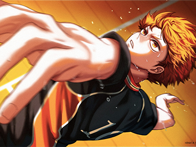
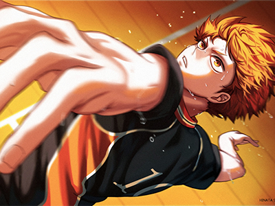

Thanakron
Studying in Lopburi Technical College.
Thanakorn Portfolio
 

About Thanakorn
My name is Thanakorn Khampun, nickname is Toey. I graduated from Ban Phraek Prachasan School. I am currently a student of Lopburi Technical College. My profile, height 175 cm. Weight 56 kg Favorite food: Noodles favorite sport: volleyball favorite animal cat In his spare time, he plays guitar, watches anime, listens to music and plays games.
My Skills
Game play
Study
Editing
Sleep
Valorant
Haikyuu
Guitar
Cat
Favorite anime character

Hinata shoyo. From Haikyuu.
protagonist of the Haikyuu!! series by Haruichi Furudate. For the majority of the series, Hinata was a first-year student at Karasuno High and one of the volleyball team's middle blockers
Edward Eric. From fullmetal alchemist brotherhood.
He is a character from the manga fullmetal alchemist brotherhood by Hiromu Arakawa. The "Elephant Alchemist" was the youngest state alchemist in the history of Amestris. He lost his left leg in an alchemy attempt to resurrect his deceased mother. and sacrificed his right arm to keep his brother's spirit Even though his brother had been snatched away from his flesh, he had crucified his brother's soul in his armor.
Midoriya izuku. From My hero academia
s the main protagonist of the My Hero Academia manga and anime series Even though Izuku was born Quirkless, he manages to catch the attention of the legendary hero All Might, due to his innate heroism and a strong sense of justice, and has since become his close pupil, as well as a student in Class 1-A at U.A. High School. All Might passed on his transferable Quirk to Izuku, making him the ninth holder of One For All.
Asta. From Black Clover
is an orphan raised under the care of a church in Hage after his mother abandons him on the church's doorstep. After turning 15 years old, Asta receives a five-leaf clover grimoire with an Anti Magic devil inside. He joins the Clover Kingdom's Black Bull squad of the Magic Knights and becomes a 1st Class Senior Magic Knight and temporarily a Royal Knight
Contact Thanakorn
Banpreak, Ayutthaya
Phone: 063-9507245
Email: toeythanakron@gmail.com
Lets get in touch. Send me a message: